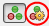
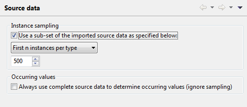

Working with a source data set
The term source data refers to data according to the source
schema loaded in hale製tudio. Loading source data therefore always
requires that the corresponding source schema has already been
imported.
Loading source data in hale製tudio serves to provide feedback on the
current mapping by transforming this data in the application. The Source Data view can be used
to inspect the source data, while the Transformed Data view
allows inspecting the transformed data. Also, if the data contains
geometries, they can be displayed in the map view. Once the mapping is
finished, the transformed data can be exported.
Configuring a sample data set
You have the possibility to load only a sub-set of your data in
hale製tudio, to use it as a sample for the data analysis and transformation
debugging. You can enable it in the tool bar or the project's source
data settings. To open the settings use tool bar button highlighted
below:

There you can enable or disable the usage of a data sub-set. You
can choose between different strategies to use for the selection of
the sample instances. A strategy usually offers some kind of editor to
configure it.
The default strategy First n instances per type for example
allows to configure the maximum number of instances per type that
should be part of the sample data.
These settings are project specific. This means they will be
loaded and saved together with the project. If you have a new project,
you can enable the instance sampling before loading any data.

Also, you can configure if for the Occurring values data
analysis the sample data or the complete data should be used.
Configuring it to use the complete data will take more time for the
analysis, but will enable you to get a complete picture on what values
occur in the source data for specific properties.
Sample data and transformation
Even if you are working with only a sample of your data, you can still
easily transform and export the complete data. Select Transformation→Transform
project data... from the menu to launch a wizard that will guide you
through the export configuration and launch the transformation. While
the transformation runs you can continue working in hale製tudio, as the
transformation works on a copy of your current mapping.
Loading the data
To  import source data, either use File→Import→Source
data... or the Import button on the application tool bar, then
select Source data. Next you will be prompted to specify where
to load the data from, e.g. from a file or an online resource. If
there are multiple possible import formats for your selection, please
choose the one that applies.
import source data, either use File→Import→Source
data... or the Import button on the application tool bar, then
select Source data. Next you will be prompted to specify where
to load the data from, e.g. from a file or an online resource. If
there are multiple possible import formats for your selection, please
choose the one that applies.
Supported data import formats in hale製tudio are: